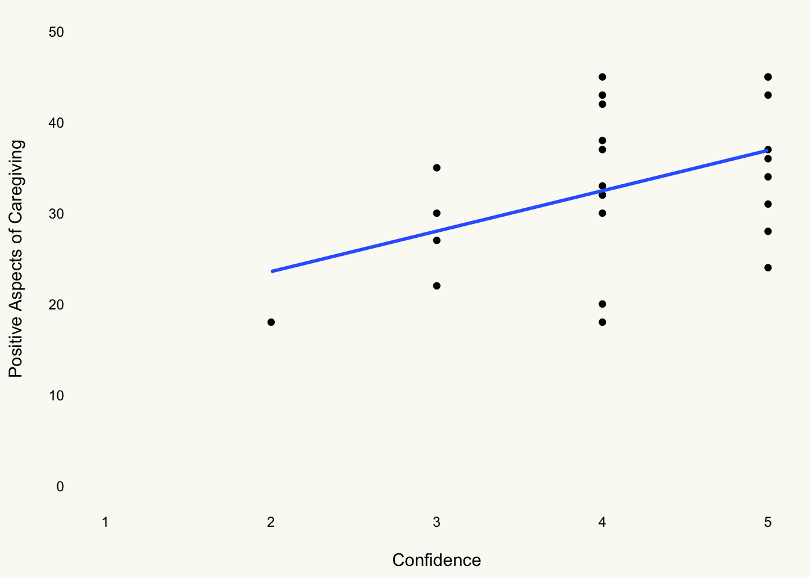
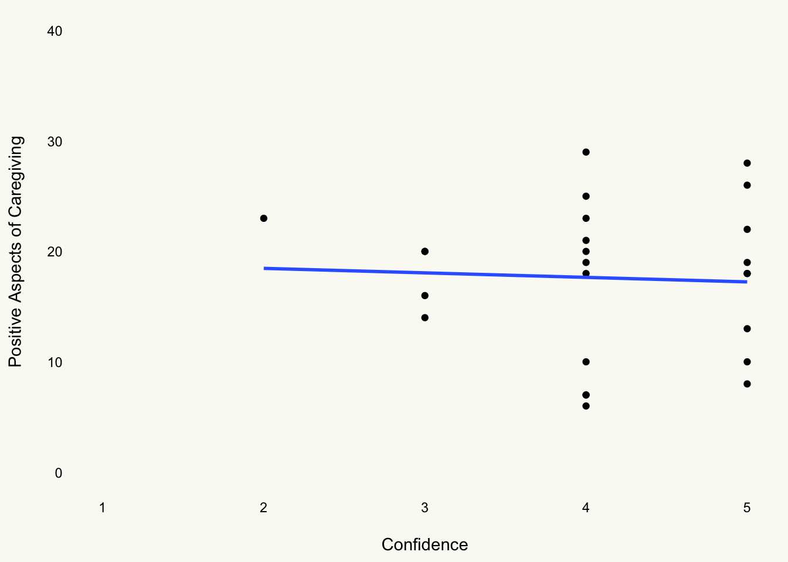

Burden of Care Analysis Report
Code
# Hux Wrapper: Correlation
hux_corr <- function(ct){
if(!class(ct) == "htest"){
print("Source must be of class 'htest'")
} else{
ct |>
broom::tidy() |>
mutate(
`CI[LL,UU]` = paste0("[",conf.low |> round(2),
",",conf.high |> round(2),
"]")
) |>
rename(
r = estimate,
t = statistic,
p = p.value,
df = parameter,
) |>
relocate(
p, .after = df
) |>
relocate(
alternative, .after = last_col()
) |>
select(-conf.low,-conf.high,-method) |>
hux() |>
theme_article()
}
}
# t-test Wrapper
hux_tt <- function(ttest,grp1,grp2){
if (!class(ttest)=="htest"){
print("Object is not a t-test")
} else {
ttest |>
broom::tidy() |>
rename(
M_Diff = estimate,
t = statistic,
p = p.value,
df = parameter,
grp1 = estimate1,
grp2 = estimate2
) |>
mutate(
`CI[ll,uu]` = paste0("[",round(conf.low,2),",",round(conf.high,2),"]")
) |>
select(!conf.low:alternative) |>
relocate(p, .after = `CI[ll,uu]`) |>
hux() |>
theme_article()
}
}
# Continous Scales
cont_skim <- function(data){
sk <-
data |>
# Data is Rowwise from cleaning
ungroup() |>
skim() |>
# Remove skim_type
yank("numeric") |>
# Make everything Look Like This
rename_with(str_to_sentence) |>
rename(
M = Mean,
SD = Sd,
Missing = N_missing,
Variable = Skim_variable
) |>
# Remove Quartile Columns
dplyr::select(!(starts_with("P"))) |>
hux() |>
theme_article() |>
set_align(everywhere,everywhere,"center") |>
set_align(row = everywhere, col = 1, value = "left")
return(sk)
}
# Discrete Scales
discrete_tab <- function(data,x,lab){
name <-
data |>
dplyr::select({{x}}) |>
pull()
tab <-
name |>
tabyl() |>
dplyr::select(-(starts_with("val"))) |>
# Ignore Error for Now,,,
adorn_pct_formatting(,,,percent) |>
rename_with(str_to_sentence) |>
hux() |>
theme_article() |>
set_align(everywhere,everywhere,".")
# Change header row to Variable | |
tab[1,] <- c(str_to_sentence(x),"","")
# Get Number of Rows
to_in <- nrow(tab)
tab[2:to_in,1] <- lab
return(tab)
}
# Set Theme Structure
theme_set(theme_minimal())
theme_update(
plot.background = element_rect(fill = "#fafaf5", color = "#fafaf5"),
panel.background = element_rect(fill = NA, color = NA),
panel.border = element_rect(fill = NA, color = NA),
)Study Design
-
IV’s
Negative Prime Scramble
Positive Prime Scramble
-
DV’s
Burden Scale for Family Caregivers
Positive Aspects of Caregiving
Dementia Attitude’s Scale
Healthy Days Score
Years as a Caregiver
Confidence in Ability to Provide Care
Support Received from Friends/Family
Hypotheses
Confidence
H1: There will be a negative correlation between confidence and BSFC Score
H2: There will be a positive correlation between confidence and PAOC Score
Priming: Negative vs. Positive
H3: There will be a main effect of priming on BSFC Score
H4: There will be a main effect of priming on PAOC Score
Support
H5: There will be a negative correlation between support and BSFC Score
H6: There will be a positive correlation between support and PAOC Score
Data Cleaning
Code
# Read in file
cg <- read.csv("Data Analysis Caregiver Study.xlsx - Correlations.csv")
# Clean Data
cg_cln <-
cg |>
# Rename variables
rename(
condition = Condition...Positive...1..Negative...2,
years_as_cg = X..years.as.caregiver,
support = Support..Do.you.feel.like.you.have.adequate.support.from.others.in.your.life..0...no..1...somewhat..2...yes,
confidence = confidence.1.not.confident.5.very.confident,
hd_general = hd_genWould.you.say.that.in.general.your.health.is...,
hd_physical = hd_physHow.many.days.during.the.past.30.days.was.your.physical.health.not.good.,
hd_mental = hd_menHow.many.days.during.the.past.30.days.was.your.mental.health.not.good.,
hd_usual = hd_usualDuring.the.past.30.days..for.about.how.many.days.did.poor.physical.or.mental.health.keep.you.from.doing.your.usual.activities..such.as.self.care..work..or.recreation.,
hd_pain = hd_painDuring.the.past.30.days..for.about.how.many.days.did.PAIN.make.it.hard.for.you.to.do.your.usual.activities..such.as.selfcare..work..or.recreation.,
hd_sad = hd_sadDuring.the.past.30.days..for.about.how.many.days.have.you.felt.SAD..BLUE..or.DEPRESSED.,
hd_worried = hd_worriedDuring.the.past.30.days..for.about.how.many.days.have.you.felt.WORRIED..TENSE..or.ANXIOUS.,
hd_sleep = hd_sleepDuring.the.past.30.days..for.about.how.many.days.have.you.felt.you.did.NOT.get.ENOUGH.REST.or.SLEEP.,
hd_energy = hd_energyDuring.the.past.30.days..for.about.how.many.days.have.you.felt.VERY.HEALTHY.AND.FULL.OF.ENERGY.
) |>
# Clean Names
clean_names()Correlations: Years as Caregiver
Years as Caregiver x Positive Aspects of Caregiving
Code
cor.test(cg_cln$years_as_cg,cg_cln$paoc) |>
hux_corr()| r | t | df | p | CI[LL,UU] | alternative |
|---|---|---|---|---|---|
| 0.311 | 1.57 | 23 | 0.13 | [-0.1,0.63] | two.sided |
Years as Caregiver x Burden Scale for Family Caregivers
Code
# Years x BSFC
cor.test(cg_cln$years_as_cg, cg_cln$bsfc) |>
hux_corr()| r | t | df | p | CI[LL,UU] | alternative |
|---|---|---|---|---|---|
| 0.0702 | 0.338 | 23 | 0.739 | [-0.33,0.45] | two.sided |
Correlations: Confidence in Health Condition
H1. Level of Confidence x Positive Aspects of Caregiving
Code
# Confidence x PAOC
cor.test(cg_cln$confidence, cg_cln$paoc) |>
hux_corr() | r | t | df | p | CI[LL,UU] | alternative |
|---|---|---|---|---|---|
| 0.441 | 2.36 | 23 | 0.0272 | [0.06,0.71] | two.sided |
Code
cg_cln |>
ggplot(aes(confidence, paoc)) +
geom_point() +
xlim(1,5) +
ylim(0,50) +
geom_smooth(method = "lm", se = FALSE) +
labs(x = "\nConfidence",
y = "Positive Aspects of Caregiving\n") +
theme(
panel.grid = element_blank(),
axis.text = element_text(color = "black")
)`geom_smooth()` using formula = 'y ~ x'
H2. Level of Confidence x Burden Scale for Family Caregivers
Code
# Confidence x BSFC
cor.test(cg_cln$confidence, cg_cln$bsfc) |>
hux_corr()| r | t | df | p | CI[LL,UU] | alternative |
|---|---|---|---|---|---|
| -0.0508 | -0.244 | 23 | 0.81 | [-0.44,0.35] | two.sided |
Code
cg_cln |>
ggplot(aes(confidence, bsfc)) +
geom_point() +
xlim(1,5) +
ylim(0,40) +
geom_smooth(method = "lm", se = FALSE) +
labs(x = "\nConfidence",
y = "Positive Aspects of Caregiving\n") +
theme(
panel.grid = element_blank(),
axis.text = element_text(color = "black")
)`geom_smooth()` using formula = 'y ~ x'
Correlations: Support
Code
# Make Support a 3 Level Factor
support <-
cg_cln |>
mutate(
support = case_when(
support == "0" ~ "No Support",
support == "1" ~ "Some Support",
support == "2" ~ "Support"
)
) |>
select(support,bsfc,paoc)H5: Support and PAOC
H6: Support and BSFC
Code
| PAOC | BSFC | |||
|---|---|---|---|---|
| No Support | 24.667 *** | (2.697) | 25.000 *** | (2.100) |
| Some Support | 8.033 * | (3.412) | -8.000 ** | (2.656) |
| Support | 14.222 *** | (3.482) | -11.667 *** | (2.711) |
| *** p < 0.001; ** p < 0.01; * p < 0.05. | ||||
Figures
Code
# Plot: Support and BSFC
support |>
ggplot(aes(support,bsfc)) +
stat_summary(
fun.data = "mean_se",
aes(color = support)
) +
geom_quasirandom() +
labs(
x = "\nLevel of Support from Friends and Family\n",
y = "Burden Scale for Family Caregivers Score\n",
color = "Degree of Support"
) +
scale_color_manual(
values = wes_palette(15)
)
Code
# Plot: Support and PAOC
support |>
ggplot(aes(support,paoc)) +
stat_summary(
fun.data = "mean_se",
aes(color = support)
) +
geom_quasirandom() +
labs(
x = "\nLevel of Support from Friends and Family\n",
y = "Positive Aspects of Caregiving Score\n",
color = "Degree of Support"
) +
scale_color_manual(
values = wes_palette(15)
)
Priming Negative vs Positive
H3: Priming and BSFC
Code
pr_bsfc <-
t.test(cg_cln$bsfc ~ cg_cln$condition, var.equal = T) |>
hux_tt()
pr_bsfc$grp1[1] <- "Negative"
pr_bsfc$grp2[1] <- "Positive"
pr_bsfc| M_Diff | Negative | Positive | t | df | CI[ll,uu] | p |
|---|---|---|---|---|---|---|
| -6.56 | 14.7 | 21.3 | -2.74 | 23 | [-11.51,-1.6] | 0.0117 |
H4: Priming and PAOC
Code
pr_paoc <-
t.test(cg_cln$paoc ~ cg_cln$condition, var.equal = T) |>
hux_tt()
pr_paoc$grp1[1] <- "Negative"
pr_paoc$grp2[1] <- "Positive"
pr_paoc| M_Diff | Negative | Positive | t | df | CI[ll,uu] | p |
|---|---|---|---|---|---|---|
| 4.06 | 34.8 | 30.7 | 1.21 | 23 | [-2.87,10.99] | 0.238 |
Healthy Days
Code
cg_cln |>
select(condition,starts_with("hd")) |>
group_by(condition) |>
mutate(condition = ifelse(condition == "1", "Positive","Negative")) |>
select(-hd_general,-hd_usual,hd_usual) |>
tidyr::pivot_longer(cols=starts_with("hd"),
names_to = "HealthyDays",
values_to = "Score") |>
mutate(HealthyDays = str_remove_all(HealthyDays, "hd_"),
HealthyDays = str_to_title(HealthyDays)) |>
ggplot(aes(fct_reorder(HealthyDays,Score),Score,
color=condition)) +
stat_summary(fun.data = "mean_se",
geom = "pointrange",
fun.y = "Score")+
coord_flip() +
facet_wrap(~condition) +
labs(
x = "Score\n",
y = "\nCondition",
caption = "All responses have a range of 30 and are all phrased in a negative connotation. \nExample: For how many days have you felt SAD, BLUE, or DEPRESSED"
) +
theme(
legend.position = "blank",
plot.caption = element_text(face = "italic",
hjust = .5)
)Warning: The `fun.y` argument of `stat_summary()` is deprecated as of ggplot2 3.3.0.
ℹ Please use the `fun` argument instead.
Descriptives
Code
cg_cln |>
select(-gender) |>
cont_skim()| Variable | Missing | Complete_rate | M | SD | Hist |
|---|---|---|---|---|---|
| age | 0 | 1 | 47.1 | 11.2 | ▇▅▃▂▇ |
| condition | 0 | 1 | 1.44 | 0.507 | ▇▁▁▁▆ |
| years_as_cg | 0 | 1 | 4.12 | 3.21 | ▇▁▁▂▁ |
| support | 0 | 1 | 1.12 | 0.781 | ▅▁▇▁▇ |
| confidence | 0 | 1 | 4.12 | 0.833 | ▁▃▁▇▆ |
| hd_general | 0 | 1 | 2.64 | 0.86 | ▂▃▁▇▂ |
| hd_physical | 0 | 1 | 4 | 7.03 | ▇▁▁▁▁ |
| hd_mental | 0 | 1 | 6.4 | 9.64 | ▇▁▁▁▁ |
| hd_usual | 0 | 1 | 4.36 | 7.02 | ▇▁▁▁▁ |
| hd_pain | 0 | 1 | 3.64 | 8.27 | ▇▁▁▁▁ |
| hd_sad | 0 | 1 | 7.16 | 9.68 | ▇▁▁▁▂ |
| hd_worried | 0 | 1 | 7.48 | 10.1 | ▇▁▁▁▁ |
| hd_sleep | 0 | 1 | 13 | 10.6 | ▇▅▂▂▅ |
| hd_energy | 0 | 1 | 11.8 | 10.2 | ▇▂▂▃▅ |
| das | 0 | 1 | 30.2 | 49.9 | ▇▁▁▁▂ |
| paoc | 0 | 1 | 33 | 8.39 | ▅▃▇▆▇ |
| bsfc | 0 | 1 | 17.6 | 6.7 | ▇▂▇▇▅ |
Demographics
Code
raw <- read.csv("Raw Data.csv") |> clean_names()
demo <-
raw |>
select(gender_1_male_2_female,
eth_1_white) |>
rename(
gender = gender_1_male_2_female,
ethnicity = eth_1_white
)
gen_lab <- c("Man",'Woman')
eth_lab <- c("White/Caucasian","Black","Multiple Ethnicities or other")
gens <- discrete_tab(demo,"gender",gen_lab)
eths <- discrete_tab(demo,"ethnicity",eth_lab)
gens |> add_rows(eths)| Gender | ||
|---|---|---|
| Man | 11 | 44.0% |
| Woman | 14 | 56.0% |
| Ethnicity | ||
| White/Caucasian | 21 | 84.0% |
| Black | 2 | 8.0% |
| Multiple Ethnicities or other | 2 | 8.0% |